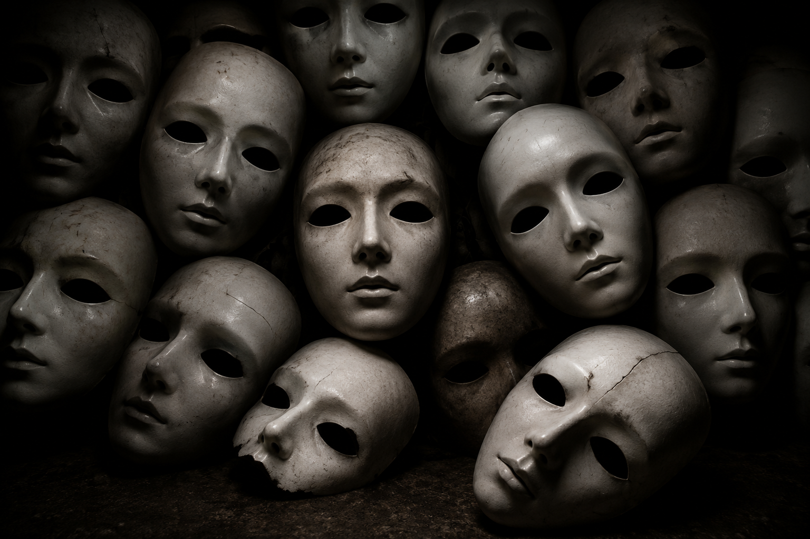

Unspoken: Poems of Love and Memory

The Silent Masquerade


We are more enigmatic than one can imagine.
Though we have eyes, ears, and noses,
we fail to notice what truly matters.
Frauds are committed,
murders unfold,
no one is safe from lust and harm.
Justice, too often, feels counterfeit,
and trust begins to lose its charm.
When will we wake to the truth
that under the weight of power,
a human life can feel like dust in the wind,
seen, but not valued,
heard, but not answered,
and justice, once bright, now trembles in the dark.